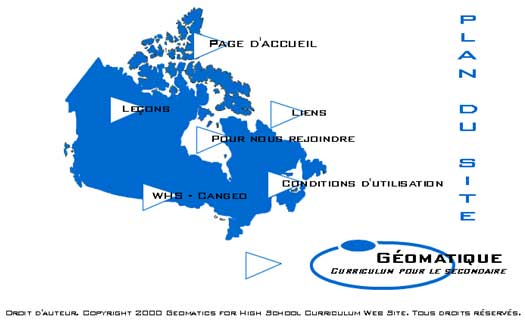

|
 Ce site a été développé avec l'appui financier du gouvernement fédéral en collaboration avec l'industrie privée et plusieurs enseignants et enseignantes du niveau secondaire. Les objectifs de ce projet étaient de développer une série de leçons distribuées sur Internet qui répondent aux attentes du nouveau curriculum d'études canadiennes et mondiales de la 9ième en Ontario. Les leçons incluent les ressources et les données nécessaires pour explorer dix sujets du curriculum de 9e année en géographie. Elles utilisent les écozones canadiennes comme cadre écologique de base. En plus de fournir des ressources et des informations de base, chaque leçon inclut un exercice SIG et fournit les données requises pour faire le travail demandé. Les leçons incluent aussi des liens Internet à d'autres données et à des informations pertinentes au sujet à l'étude. Ces leçons donnent aux enseignants et enseignantes une ressource dynamique pour l'enseignement et l'apprentissage de la géographie du Canada et exposent les élèves à une technologie de pointe qui les introduit au SIG et à la géomatique sur Internet.
|